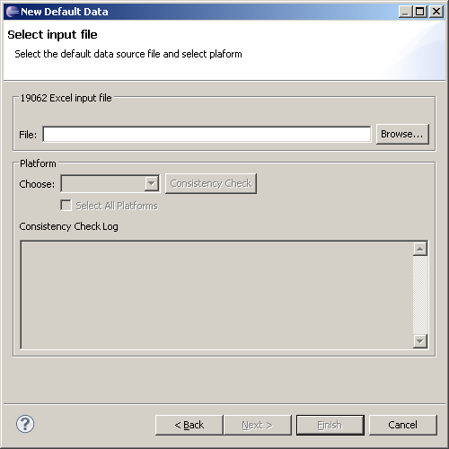
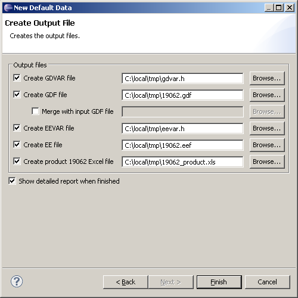

Default Data is a wizard for reading, writing, consistency checking, and merging 19062, GDF, and GDVAR files used in the production process.
Please make sure that you have an 19062 Excel Input File.
Open the Default Data Sheet Tool Wizard by completing the following steps:
The following wizard will pop-up.
Required Fields:
It is possible to work with a particular platform or to include all platforms that are specified by the 19062 file. The drop-down list box contains all platforms specified in the selected 19062 file. When the tool is first started, the drop-down list box is empty until a 19062 file has been selected. To perform action(s) on all platforms specified in the 19062, select All. Note: When selecting all platforms, output files are placed in a sub-directory for each platform. Sub-directories are created (if necessary) and named by the platform. The Detailed report option is not available when selecting all platforms.
This action checks the consistency of the default data for the selected platform(s). The consistency check involves checking that the default data is valid and that it confirms to the ranges given in the 19062 file specified in the 19062 Excel file field.
One or many output files can be created in one action. Simply choose which files to create and then click Finish.

Check this box to create a GDVAR file, using the path specified in the adjacent field. Use the "Browse" button to browse for another path or filename than the suggested.
Check this box to create a GDF file, using the path specified in the adjacent field. Use the "Browse" button to browse for another path or filename than the suggested.
Check this box to merge the contents of an existing GDF file when creating a new GDF file. This alternative is only available if Create GDF file is already selected. The adjacent field is used to specify the input GDF file to use for the merge. Use the "Browse" button to browse for the input file. If the same ID number is found in the 19062 file and the input GDF file, the 19062 data has precedence.
Check this box to create an Early Configuration (EE) file, using the path specified in the adjacent field. Use the "Browse" button to browse for another path or filename than the suggested one.
Check this box to create an Early Configuration h (EEVAR) file, using the path specified in the adjacent field. Use the "Browse" button to browse for another path or filename than the suggested one. Create Product 19062 Excel File Check this box to create a customized version of the 19062 input file, using the path specified in the adjacent field. Use the "Browse" button to browse for another path or filename than the suggested. The differences between the input file and the customized version are the following:
This action creates the output files in accordance to the selections above. Before any output file is produced, a consistency check is performed to ensure that the 19062 file, specified in the 19062 Excel file field, is valid. If one of the output files to be produced already exists, it has to be decided whether or not to replace the existing file; if "No", the specific file is not created, but the rest of the action continues. If generation of GDF file(s) is selected, it has to be decided if calibration data is to be included in the generated GDF file. When processing of all platforms is selected, this question is only asked once and the answer is then applied to all platforms. The generated file uses Windows-style line ending. This means that the line ending consists of CR (Carriage Return, 0x0D) followed by LF (Line Feed, 0x0A).
Check this box to have eclipse to open a report containing information on the results of the actions. Note: This option is not available when processing all platforms at once.